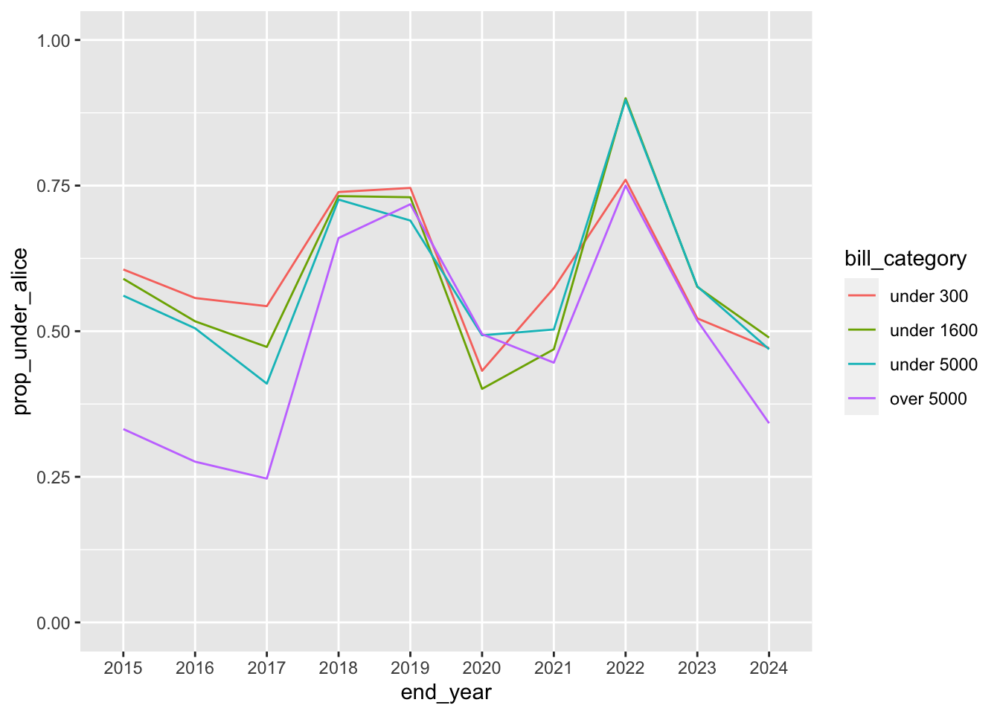

library(tidyverse)
library(janitor)
library(scales)
library(sf)
library(mapview)
library(RColorBrewer)AnalysisTEASalaries
Setup
Read in cleaned data
teaching_staff_salaries <- read_rds("data-processed/teaching_staff_salaries.rds")
cpi <- read_rds("data-processed/cpi_201401_202502")
household_budget_simple <- read_rds("data-processed/alice_household_budget.rds")
enrollment <- read_rds("data-processed/enrollment-by-district.rds")Now I want to only look at totals for teaching staff at each district. I also want to exclude charters and exclude the weird small pay amounts.
teaching_staff_totals_no_enroll <- teaching_staff_salaries |>
filter(staff == "TOTAL TEACHING STAFF" & average_base_pay > 10000 & charter_status == "TRADITIONAL ISD/CSD")
teaching_staff_totals_no_enroll# A tibble: 9,322 × 18
region county district_number district_name.x charter_status staff_category
<chr> <chr> <chr> <chr> <chr> <chr>
1 07 ANDERSO… 001902 CAYUGA ISD TRADITIONAL I… TEACHING STAFF
2 07 ANDERSO… 001903 ELKHART ISD TRADITIONAL I… TEACHING STAFF
3 07 ANDERSO… 001904 FRANKSTON ISD TRADITIONAL I… TEACHING STAFF
4 07 ANDERSO… 001906 NECHES ISD TRADITIONAL I… TEACHING STAFF
5 07 ANDERSO… 001907 PALESTINE ISD TRADITIONAL I… TEACHING STAFF
6 07 ANDERSO… 001908 WESTWOOD ISD TRADITIONAL I… TEACHING STAFF
7 07 ANDERSO… 001909 SLOCUM ISD TRADITIONAL I… TEACHING STAFF
8 18 ANDREWS… 002901 ANDREWS ISD TRADITIONAL I… TEACHING STAFF
9 07 ANGELIN… 003902 HUDSON ISD TRADITIONAL I… TEACHING STAFF
10 07 ANGELIN… 003903 LUFKIN ISD TRADITIONAL I… TEACHING STAFF
# ℹ 9,312 more rows
# ℹ 12 more variables: staff <chr>, fte_count <dbl>, total_base_pay <dbl>,
# average_base_pay <dbl>, school_year <fct>, district_name.y <chr>,
# tea_district_type <chr>, tea_description <chr>, nces_district_type <chr>,
# nces_description <chr>, charter_school_y_n <chr>, end_year <chr>I want to add enrollment to this dataframe.
teaching_staff_totals <- teaching_staff_totals_no_enroll |>
left_join(enrollment, by = c("district_name.x" = "district_name", "school_year" = "year"))
teaching_staff_totals |> tail()# A tibble: 6 × 19
region county district_number district_name.x charter_status staff_category
<chr> <chr> <chr> <chr> <chr> <chr>
1 03 DEWITT C… 062903 YOAKUM ISD TRADITIONAL I… TEACHING STAFF
2 03 DEWITT C… 062904 YORKTOWN ISD TRADITIONAL I… TEACHING STAFF
3 19 EL PASO … 071905 YSLETA ISD TRADITIONAL I… TEACHING STAFF
4 01 ZAPATA C… 253901 ZAPATA COUNTY … TRADITIONAL I… TEACHING STAFF
5 07 ANGELINA… 003906 ZAVALLA ISD TRADITIONAL I… TEACHING STAFF
6 15 BROWN CO… 025906 ZEPHYR ISD TRADITIONAL I… TEACHING STAFF
# ℹ 13 more variables: staff <chr>, fte_count <dbl>, total_base_pay <dbl>,
# average_base_pay <dbl>, school_year <chr>, district_name.y <chr>,
# tea_district_type <chr>, tea_description <chr>, nces_district_type <chr>,
# nces_description <chr>, charter_school_y_n <chr>, end_year <chr>,
# total_enrollment <dbl>Now let’s look at the average pay per district per year so we can look at it over time.
teaching_staff_average_school_years <- teaching_staff_totals |>
group_by(district_name.x, school_year) |> summarize(avg_pay = mean(average_base_pay))`summarise()` has grouped output by 'district_name.x'. You can override using
the `.groups` argument.teaching_staff_average_school_years# A tibble: 9,222 × 3
# Groups: district_name.x [1,023]
district_name.x school_year avg_pay
<chr> <chr> <dbl>
1 ABBOTT ISD 2014-2015 42066
2 ABBOTT ISD 2015-2016 43863
3 ABBOTT ISD 2016-2017 43346
4 ABBOTT ISD 2017-2018 45447
5 ABBOTT ISD 2018-2019 44707
6 ABBOTT ISD 2019-2020 52540
7 ABBOTT ISD 2020-2021 51449
8 ABBOTT ISD 2021-2022 54155
9 ABBOTT ISD 2022-2023 55584
10 ABBOTT ISD 2023-2024 54927
# ℹ 9,212 more rowsOkay there’s too many schools for us to graph these all at once. Maybe if we just do one region (central texas, 13).
austin_schools <- teaching_staff_totals |> filter(region == "13") |>
group_by(district_name.x, school_year) |> summarize(avg_pay = mean(average_base_pay)) `summarise()` has grouped output by 'district_name.x'. You can override using
the `.groups` argument.austin_schools# A tibble: 483 × 3
# Groups: district_name.x [57]
district_name.x school_year avg_pay
<chr> <chr> <dbl>
1 AUSTIN ISD 2014-2015 47476
2 AUSTIN ISD 2015-2016 48631
3 AUSTIN ISD 2016-2017 50144
4 AUSTIN ISD 2017-2018 52397
5 AUSTIN ISD 2018-2019 51464
6 AUSTIN ISD 2019-2020 54707
7 AUSTIN ISD 2020-2021 55849
8 AUSTIN ISD 2021-2022 56424
9 AUSTIN ISD 2022-2023 58511
10 AUSTIN ISD 2023-2024 60821
# ℹ 473 more rowsThat’s still too many to be understandable on a graph. Let’s instead look at just one district.
austin <- austin_schools |> filter(district_name.x == "AUSTIN ISD")ggplot(austin, aes(x = school_year, y = avg_pay, color = district_name.x, group = district_name.x)) +
geom_line() +
theme(legend.position = "none") #+ #facet_wrap(~district_name) # we can use this if we are looking at multiple districtswrite_rds(teaching_staff_totals, "data-processed/teaching_staff_totals.rds")With District Types
I want to see how many districts are in each category from TEA in 2024.
teaching_staff_totals |> group_by(tea_description) |> count(name = "total_districts")# A tibble: 9 × 2
# Groups: tea_description [9]
tea_description total_districts
<chr> <int>
1 Independent Town 489
2 Major Suburban 677
3 Major Urban 101
4 Non-metropolitan Fast Growing 311
5 Non-metropolitan Stable 1647
6 Other Central City 321
7 Other Central City Suburban 1519
8 Rural 4233
9 <NA> 24teaching_staff_totals |> filter(school_year == "2023-2024") |> group_by(tea_description) |> count(name = "total_districts")# A tibble: 8 × 2
# Groups: tea_description [8]
tea_description total_districts
<chr> <int>
1 Independent Town 53
2 Major Suburban 75
3 Major Urban 11
4 Non-metropolitan Fast Growing 34
5 Non-metropolitan Stable 181
6 Other Central City 35
7 Other Central City Suburban 167
8 Rural 464Now I want to see the average pay for each TEA district type for each school year.
district_types_tea_chart <- teaching_staff_totals |> group_by(tea_description, school_year) |>
summarize(avg_pay = mean(average_base_pay))`summarise()` has grouped output by 'tea_description'. You can override using
the `.groups` argument.district_types_tea_chart# A tibble: 87 × 3
# Groups: tea_description [9]
tea_description school_year avg_pay
<chr> <chr> <dbl>
1 Independent Town 2014-2015 45775.
2 Independent Town 2015-2016 46330.
3 Independent Town 2016-2017 46938.
4 Independent Town 2017-2018 47376.
5 Independent Town 2018-2019 47945.
6 Independent Town 2019-2020 51791.
7 Independent Town 2020-2021 52313.
8 Independent Town 2021-2022 52986.
9 Independent Town 2022-2023 54895.
10 Independent Town 2023-2024 57213.
# ℹ 77 more rowsChart
Now let’s chart it.
ggplot(district_types_tea_chart, aes(x = school_year, y = avg_pay, color = tea_description, group = tea_description)) +
geom_point() +
geom_line() +
theme(legend.position = "bottom") +
guides(color = guide_legend(nrow = 4, byrow = TRUE))Adding Cost of Living
Now that we have ALICE’s household survival budget, I can use it to compare that to each districts salaries.
Now, I am going to left join it on both the county and year.
salaries_col <- left_join(teaching_staff_totals, household_budget_simple, by = c("county", "end_year"))
salaries_col# A tibble: 9,322 × 20
region county district_number district_name.x charter_status staff_category
<chr> <chr> <chr> <chr> <chr> <chr>
1 07 ANDERSO… 001902 CAYUGA ISD TRADITIONAL I… TEACHING STAFF
2 07 ANDERSO… 001903 ELKHART ISD TRADITIONAL I… TEACHING STAFF
3 07 ANDERSO… 001904 FRANKSTON ISD TRADITIONAL I… TEACHING STAFF
4 07 ANDERSO… 001906 NECHES ISD TRADITIONAL I… TEACHING STAFF
5 07 ANDERSO… 001907 PALESTINE ISD TRADITIONAL I… TEACHING STAFF
6 07 ANDERSO… 001908 WESTWOOD ISD TRADITIONAL I… TEACHING STAFF
7 07 ANDERSO… 001909 SLOCUM ISD TRADITIONAL I… TEACHING STAFF
8 18 ANDREWS… 002901 ANDREWS ISD TRADITIONAL I… TEACHING STAFF
9 07 ANGELIN… 003902 HUDSON ISD TRADITIONAL I… TEACHING STAFF
10 07 ANGELIN… 003903 LUFKIN ISD TRADITIONAL I… TEACHING STAFF
# ℹ 9,312 more rows
# ℹ 14 more variables: staff <chr>, fte_count <dbl>, total_base_pay <dbl>,
# average_base_pay <dbl>, school_year <chr>, district_name.y <chr>,
# tea_district_type <chr>, tea_description <chr>, nces_district_type <chr>,
# nces_description <chr>, charter_school_y_n <chr>, end_year <chr>,
# total_enrollment <dbl>, alice_threshold_hh_under_65 <dbl>There are a few years that are inconsistent between the datasets. But since I have data around each year, I can use that. For example, I want to use 2016 for 2015 when needed. But, I also want to use 2022 for 2024 when needed. So I am going to fill up first, then down in each county.
First, I am going to it out with a single district.
testing_filling <- salaries_col |> filter(county == "ANDERSON COUNTY") |> select(
county, district_name.x, district_number, school_year, end_year, alice_threshold_hh_under_65) |>
fill(alice_threshold_hh_under_65, .direction = "updown")
testing_filling# A tibble: 63 × 6
county district_name.x district_number school_year end_year
<chr> <chr> <chr> <chr> <chr>
1 ANDERSON COUNTY CAYUGA ISD 001902 2014-2015 2015
2 ANDERSON COUNTY ELKHART ISD 001903 2014-2015 2015
3 ANDERSON COUNTY FRANKSTON ISD 001904 2014-2015 2015
4 ANDERSON COUNTY NECHES ISD 001906 2014-2015 2015
5 ANDERSON COUNTY PALESTINE ISD 001907 2014-2015 2015
6 ANDERSON COUNTY WESTWOOD ISD 001908 2014-2015 2015
7 ANDERSON COUNTY SLOCUM ISD 001909 2014-2015 2015
8 ANDERSON COUNTY CAYUGA ISD 001902 2015-2016 2016
9 ANDERSON COUNTY ELKHART ISD 001903 2015-2016 2016
10 ANDERSON COUNTY FRANKSTON ISD 001904 2015-2016 2016
# ℹ 53 more rows
# ℹ 1 more variable: alice_threshold_hh_under_65 <dbl>Actually, I want to fill down first then up, because I want to use the previous year when necessary instead of a future year and then for 2015 I will use 2016.
I’ll do it for all of the data.
salaries_col_fill <- salaries_col |> arrange(county, end_year) |>
group_by(county) |>
fill(alice_threshold_hh_under_65, .direction = "downup")
salaries_col_fill# A tibble: 9,322 × 20
# Groups: county [253]
region county district_number district_name.x charter_status staff_category
<chr> <chr> <chr> <chr> <chr> <chr>
1 07 ANDERSO… 001902 CAYUGA ISD TRADITIONAL I… TEACHING STAFF
2 07 ANDERSO… 001903 ELKHART ISD TRADITIONAL I… TEACHING STAFF
3 07 ANDERSO… 001904 FRANKSTON ISD TRADITIONAL I… TEACHING STAFF
4 07 ANDERSO… 001906 NECHES ISD TRADITIONAL I… TEACHING STAFF
5 07 ANDERSO… 001907 PALESTINE ISD TRADITIONAL I… TEACHING STAFF
6 07 ANDERSO… 001908 WESTWOOD ISD TRADITIONAL I… TEACHING STAFF
7 07 ANDERSO… 001909 SLOCUM ISD TRADITIONAL I… TEACHING STAFF
8 07 ANDERSO… 001902 CAYUGA ISD TRADITIONAL I… TEACHING STAFF
9 07 ANDERSO… 001903 ELKHART ISD TRADITIONAL I… TEACHING STAFF
10 07 ANDERSO… 001904 FRANKSTON ISD TRADITIONAL I… TEACHING STAFF
# ℹ 9,312 more rows
# ℹ 14 more variables: staff <chr>, fte_count <dbl>, total_base_pay <dbl>,
# average_base_pay <dbl>, school_year <chr>, district_name.y <chr>,
# tea_district_type <chr>, tea_description <chr>, nces_district_type <chr>,
# nces_description <chr>, charter_school_y_n <chr>, end_year <chr>,
# total_enrollment <dbl>, alice_threshold_hh_under_65 <dbl>Now I want to see the difference between the ALICE budget and the average salary for each district.
salary_col_comparison <- salaries_col_fill |> mutate(
difference = (average_base_pay - alice_threshold_hh_under_65) |> round_half_up()
) |> select(
region, county, "district_name" = "district_name.x", district_number, total_enrollment, average_base_pay, school_year, end_year, tea_description, nces_description, alice_threshold_hh_under_65, difference
)
salary_col_comparison# A tibble: 9,322 × 12
# Groups: county [253]
region county district_name district_number total_enrollment average_base_pay
<chr> <chr> <chr> <chr> <dbl> <dbl>
1 07 ANDER… CAYUGA ISD 001902 577 44925
2 07 ANDER… ELKHART ISD 001903 1217 41985
3 07 ANDER… FRANKSTON ISD 001904 803 41609
4 07 ANDER… NECHES ISD 001906 370 42884
5 07 ANDER… PALESTINE ISD 001907 3353 43642
6 07 ANDER… WESTWOOD ISD 001908 1596 42097
7 07 ANDER… SLOCUM ISD 001909 389 44371
8 07 ANDER… CAYUGA ISD 001902 570 45359
9 07 ANDER… ELKHART ISD 001903 1244 44248
10 07 ANDER… FRANKSTON ISD 001904 842 43165
# ℹ 9,312 more rows
# ℹ 6 more variables: school_year <chr>, end_year <chr>, tea_description <chr>,
# nces_description <chr>, alice_threshold_hh_under_65 <dbl>, difference <dbl>write_rds(salary_col_comparison, "data-processed/salary_col_comparison.rds")Let’s look at the districts with the lowest values for difference in salary and ALICE, which means the most negative. I want to see the worst 10 for each year.
salary_col_comparison |> group_by(end_year) |> slice_min(difference, n = 10)# A tibble: 100 × 12
# Groups: end_year [10]
region county district_name district_number total_enrollment average_base_pay
<chr> <chr> <chr> <chr> <dbl> <dbl>
1 13 WILLI… COUPLAND ISD 246914 142 38142
2 15 EDWAR… ROCKSPRINGS … 069901 257 38959
3 15 EDWAR… NUECES CANYO… 069902 297 39233
4 15 CONCH… PAINT ROCK I… 048903 211 40007
5 10 ELLIS… ITALY ISD 070907 577 40555
6 18 REEVE… BALMORHEA ISD 195902 161 40923
7 13 WILLI… GRANGER ISD 246905 426 41634
8 06 WALKE… NEW WAVERLY … 236901 964 41915
9 10 ELLIS… PALMER ISD 070910 1145 42028
10 13 WILLI… THRALL ISD 246912 655 42164
# ℹ 90 more rows
# ℹ 6 more variables: school_year <chr>, end_year <chr>, tea_description <chr>,
# nces_description <chr>, alice_threshold_hh_under_65 <dbl>, difference <dbl>Now let’s see the best 10 for each year (most positive).
salary_col_comparison |> group_by(end_year) |> slice_max(difference, n = 10)# A tibble: 100 × 12
# Groups: end_year [10]
region county district_name district_number total_enrollment average_base_pay
<chr> <chr> <chr> <chr> <dbl> <dbl>
1 20 KERR … DIVIDE ISD 133905 -9999993 63861
2 17 KENT … JAYTON-GIRAR… 132902 130 51405
3 11 SOMER… GLEN ROSE ISD 213901 1667 55351
4 17 BORDE… BORDEN COUNT… 017901 249 60208
5 03 MATAG… PALACIOS ISD 158905 1442 54612
6 04 CHAMB… BARBERS HILL… 036902 4903 64376
7 18 TERRE… TERRELL COUN… 222901 142 49273
8 18 BREWS… SAN VICENTE … 022903 29 48777
9 16 OLDHA… BOYS RANCH I… 180901 281 53602
10 17 KING … GUTHRIE CSD 135001 115 53465
# ℹ 90 more rows
# ℹ 6 more variables: school_year <chr>, end_year <chr>, tea_description <chr>,
# nces_description <chr>, alice_threshold_hh_under_65 <dbl>, difference <dbl>Now I want to see the average difference, median difference and count of districts for each TEA district type category.
salary_col_comparison |> group_by(tea_description) |>
summarize(avg_difference = mean(difference),
median_difference = median(difference),
number_of_districts = n()) |>
# fix number of districts, maybe
arrange(avg_difference)# A tibble: 9 × 4
tea_description avg_difference median_difference number_of_districts
<chr> <dbl> <dbl> <int>
1 Non-metropolitan Fast Gr… -5368. -4581 311
2 <NA> -3055. -2348 24
3 Other Central City Subur… -1702. -1109 1519
4 Non-metropolitan Stable -1300. -527 1647
5 Rural -1043. -719 4233
6 Independent Town -420. 60 489
7 Other Central City 205. 566 321
8 Major Suburban 673. 1243 677
9 Major Urban 1813. 2157 101Now I want to look at the average difference over time.
avg_difference_over_time <- salary_col_comparison |> group_by(tea_description, end_year) |>
summarize(avg_difference = mean(difference))`summarise()` has grouped output by 'tea_description'. You can override using
the `.groups` argument.avg_difference_over_time# A tibble: 87 × 3
# Groups: tea_description [9]
tea_description end_year avg_difference
<chr> <chr> <dbl>
1 Independent Town 2015 398.
2 Independent Town 2016 952.
3 Independent Town 2017 1560.
4 Independent Town 2018 -2813.
5 Independent Town 2019 -3092.
6 Independent Town 2020 753.
7 Independent Town 2021 -234.
8 Independent Town 2022 -5187.
9 Independent Town 2023 -1271.
10 Independent Town 2024 1047.
# ℹ 77 more rowsLet’s graph it.
ggplot(avg_difference_over_time,
aes(x = end_year, y = avg_difference, color = tea_description, group = tea_description)) +
geom_line() +
scale_y_continuous(limits = c(-10000,5000), n.breaks = 10)This graph shows the average difference between a district’s salary and the ALICE cost of living threshold for each TEA district type over time.
Bill Categories
I am going to create a bill category column that includes the different categories the SB and HB have defined as important to the bill. These numbers incluse 5000, 1600 and 300.
bill_category_df <-salary_col_comparison |> mutate(
bill_category = case_when(
total_enrollment >= 5000 ~ "over 5000",
total_enrollment < 300 ~ "under 300",
total_enrollment < 1600 ~ "under 1600",
total_enrollment < 5000 ~ "under 5000")
) |> mutate(
bill_category = factor(bill_category, levels = c("under 300", "under 1600", "under 5000", "over 5000"))
)
bill_category_df# A tibble: 9,322 × 13
# Groups: county [253]
region county district_name district_number total_enrollment average_base_pay
<chr> <chr> <chr> <chr> <dbl> <dbl>
1 07 ANDER… CAYUGA ISD 001902 577 44925
2 07 ANDER… ELKHART ISD 001903 1217 41985
3 07 ANDER… FRANKSTON ISD 001904 803 41609
4 07 ANDER… NECHES ISD 001906 370 42884
5 07 ANDER… PALESTINE ISD 001907 3353 43642
6 07 ANDER… WESTWOOD ISD 001908 1596 42097
7 07 ANDER… SLOCUM ISD 001909 389 44371
8 07 ANDER… CAYUGA ISD 001902 570 45359
9 07 ANDER… ELKHART ISD 001903 1244 44248
10 07 ANDER… FRANKSTON ISD 001904 842 43165
# ℹ 9,312 more rows
# ℹ 7 more variables: school_year <chr>, end_year <chr>, tea_description <chr>,
# nces_description <chr>, alice_threshold_hh_under_65 <dbl>,
# difference <dbl>, bill_category <fct>write_rds(bill_category_df, "data-processed/bill_cateogry_df.rds")I am going to use the column bill_category to look at what the col vs salary looks like for the categories the bill wants to target. This is the same concept as above but for these bill categories instead of tea categories.
bill_category_df |> group_by(bill_category) |>
summarize(avg_difference = mean(difference, na.rm = T),
median_difference = median(difference, na.rm = T),
total_districts_since_2015 = n())# A tibble: 4 × 4
bill_category avg_difference median_difference total_districts_since_2015
<fct> <dbl> <dbl> <int>
1 under 300 -1291. -1058 1861
2 under 1600 -1426. -822. 3930
3 under 5000 -1451. -680 1819
4 over 5000 151. 616 1712bill_category_df |> filter(end_year == 2024) |>
group_by(bill_category) |>
summarize(avg_difference = mean(difference, na.rm = T),
median_difference = median(difference, na.rm = T),
total_districts_2024 = n())# A tibble: 4 × 4
bill_category avg_difference median_difference total_districts_2024
<fct> <dbl> <dbl> <int>
1 under 300 649. 542. 206
2 under 1600 -399. 207 425
3 under 5000 85.3 284 196
4 over 5000 1218. 1312 193avg_difference_bill_category <- bill_category_df |> group_by(bill_category, end_year) |>
summarize(avg_difference = mean(difference, na.rm = T))`summarise()` has grouped output by 'bill_category'. You can override using the
`.groups` argument.avg_difference_bill_category# A tibble: 40 × 3
# Groups: bill_category [4]
bill_category end_year avg_difference
<fct> <chr> <dbl>
1 under 300 2015 -1794.
2 under 300 2016 -951.
3 under 300 2017 -511.
4 under 300 2018 -4323.
5 under 300 2019 -3810.
6 under 300 2020 1470.
7 under 300 2021 -1109.
8 under 300 2022 -6138.
9 under 300 2023 -709.
10 under 300 2024 649.
# ℹ 30 more rowsggplot(avg_difference_bill_category,
aes(x = end_year, y = avg_difference, color = bill_category, group = bill_category)) +
geom_line() +
scale_y_continuous(limits = c(-10000,5000), n.breaks = 10)Proportion of districts with salary above and below alice line
I want to know how many districts have salaries that meet the ALICE line or not. And find the proportion of of those districts for each TEA district type and based on the bill categories for districts.
First, I want to create a column that indicates if the salary is above or below ALICE.
# in a district category whats the number of districts where the salary is below alice for that district dividied by the total number of districts in that category
above_below_alice <- bill_category_df |> mutate(
above_alice = case_when(
average_base_pay >= alice_threshold_hh_under_65 ~ T,
TRUE ~ F
)
)
above_below_alice# A tibble: 9,322 × 14
# Groups: county [253]
region county district_name district_number total_enrollment average_base_pay
<chr> <chr> <chr> <chr> <dbl> <dbl>
1 07 ANDER… CAYUGA ISD 001902 577 44925
2 07 ANDER… ELKHART ISD 001903 1217 41985
3 07 ANDER… FRANKSTON ISD 001904 803 41609
4 07 ANDER… NECHES ISD 001906 370 42884
5 07 ANDER… PALESTINE ISD 001907 3353 43642
6 07 ANDER… WESTWOOD ISD 001908 1596 42097
7 07 ANDER… SLOCUM ISD 001909 389 44371
8 07 ANDER… CAYUGA ISD 001902 570 45359
9 07 ANDER… ELKHART ISD 001903 1244 44248
10 07 ANDER… FRANKSTON ISD 001904 842 43165
# ℹ 9,312 more rows
# ℹ 8 more variables: school_year <chr>, end_year <chr>, tea_description <chr>,
# nces_description <chr>, alice_threshold_hh_under_65 <dbl>,
# difference <dbl>, bill_category <fct>, above_alice <lgl>Now I am goint to count the number of districts below alice, count the total number of districts in each tea district group and then calculate the proportion of districts that fall below the line.
above_below_alice |> group_by(tea_description) |>
summarize(under_alice = sum(above_alice == FALSE),
total_districts_since_2015 = n()) |>
mutate(prop_under_alice = (under_alice / total_districts_since_2015) |> round_half_up(3)) |>
arrange(desc(prop_under_alice))# A tibble: 9 × 4
tea_description under_alice total_districts_sinc…¹ prop_under_alice
<chr> <int> <int> <dbl>
1 Non-metropolitan Fast Gro… 238 311 0.765
2 <NA> 18 24 0.75
3 Other Central City Suburb… 891 1519 0.587
4 Rural 2327 4233 0.55
5 Non-metropolitan Stable 884 1647 0.537
6 Independent Town 240 489 0.491
7 Other Central City 148 321 0.461
8 Major Suburban 273 677 0.403
9 Major Urban 32 101 0.317
# ℹ abbreviated name: ¹total_districts_since_2015Now I want this for 2024.
above_below_alice |> filter(end_year == 2024) |>
group_by(tea_description) |>
summarize(under_alice = sum(above_alice == FALSE),
total_districts_2024 = n()) |>
mutate(prop_under_alice = (under_alice / total_districts_2024) |> round_half_up(3)) |>
arrange(desc(prop_under_alice))# A tibble: 8 × 4
tea_description under_alice total_districts_2024 prop_under_alice
<chr> <int> <int> <dbl>
1 Non-metropolitan Fast Growi… 25 34 0.735
2 Other Central City Suburban 84 167 0.503
3 Rural 220 464 0.474
4 Independent Town 22 53 0.415
5 Non-metropolitan Stable 75 181 0.414
6 Other Central City 13 35 0.371
7 Major Suburban 22 75 0.293
8 Major Urban 2 11 0.182Now here’s the same thing but for the bill categories.
above_below_alice |> group_by(bill_category) |>
summarize(under_alice = sum(above_alice == FALSE),
total_districts_2024 = n()) |>
mutate(prop_under_alice = (under_alice / total_districts_2024) |> round_half_up(3)) |>
arrange(desc(prop_under_alice))# A tibble: 4 × 4
bill_category under_alice total_districts_2024 prop_under_alice
<fct> <int> <int> <dbl>
1 under 300 1077 1861 0.579
2 under 1600 2192 3930 0.558
3 under 5000 1007 1819 0.554
4 over 5000 775 1712 0.453And again but for 2024.
above_below_alice |> filter(end_year == 2024) |>
group_by(bill_category) |>
summarize(under_alice = sum(above_alice == FALSE),
total_districts_2024 = n()) |>
mutate(prop_under_alice = (under_alice / total_districts_2024) |> round_half_up(3)) |>
arrange(desc(prop_under_alice))# A tibble: 4 × 4
bill_category under_alice total_districts_2024 prop_under_alice
<fct> <int> <int> <dbl>
1 under 1600 208 425 0.489
2 under 300 97 206 0.471
3 under 5000 92 196 0.469
4 over 5000 66 193 0.342write_rds(above_below_alice, "data-processed/above_below_alice.rds")Proportion above/below alice over time
Now let’s do the same thing as above but look at it over time so I can graph it. First for tea categories.
above_below_alice_over_time_tea <- above_below_alice |> group_by(tea_description, end_year) |>
summarize(under_alice = sum(above_alice == FALSE),
total_districts = n()) |>
mutate(prop_under_alice = (under_alice / total_districts) |> round_half_up(3)) |>
arrange(desc(prop_under_alice))`summarise()` has grouped output by 'tea_description'. You can override using
the `.groups` argument.above_below_alice_over_time_tea# A tibble: 87 × 5
# Groups: tea_description [9]
tea_description end_year under_alice total_districts prop_under_alice
<chr> <chr> <int> <int> <dbl>
1 Major Urban 2022 2 2 1
2 Non-metropolitan Fast … 2022 5 5 1
3 <NA> 2015 5 5 1
4 <NA> 2020 2 2 1
5 <NA> 2021 1 1 1
6 Non-metropolitan Stable 2022 16 18 0.889
7 Non-metropolitan Fast … 2019 30 34 0.882
8 Major Suburban 2022 7 8 0.875
9 Non-metropolitan Fast … 2018 29 34 0.853
10 Non-metropolitan Fast … 2023 29 34 0.853
# ℹ 77 more rowsggplot(above_below_alice_over_time_tea,
aes(x = end_year,
y = prop_under_alice,
color = tea_description,
group = tea_description)) +
geom_line() +
scale_y_continuous(limits = c(0, 1))Now for the bill categories.
above_below_alice_over_time_bill <- above_below_alice |> group_by(bill_category, end_year) |>
summarize(under_alice = sum(above_alice == FALSE),
total_districts = n()) |>
mutate(prop_under_alice = (under_alice / total_districts) |> round_half_up(3)) |>
arrange(desc(prop_under_alice))`summarise()` has grouped output by 'bill_category'. You can override using the
`.groups` argument.above_below_alice_over_time_bill# A tibble: 40 × 5
# Groups: bill_category [4]
bill_category end_year under_alice total_districts prop_under_alice
<fct> <chr> <int> <int> <dbl>
1 under 1600 2022 45 50 0.9
2 under 5000 2022 26 29 0.897
3 under 300 2022 19 25 0.76
4 over 5000 2022 15 20 0.75
5 under 300 2019 150 201 0.746
6 under 300 2018 147 199 0.739
7 under 1600 2018 319 436 0.732
8 under 1600 2019 316 433 0.73
9 under 5000 2018 143 197 0.726
10 over 5000 2019 135 188 0.718
# ℹ 30 more rowsggplot(above_below_alice_over_time_bill,
aes(x = end_year,
y = prop_under_alice,
color = bill_category,
group = bill_category)) +
geom_line() +
scale_y_continuous(limits = c(0,1))
Questions from Camille 4/16: Which districts by type have the biggest discrepancy between cost of living and their average salary proportion of districts in each category that are above/below alice threshold How many districts of each type are under 5000 enrollment? What percentage of districts in each type are under 5000 enrollment? How many urban/suburban districts are under 5000 and how do they pay their teachers? This number of districts in texas pay their teachers under living wage (or percentage) What percentage of students are served by teachers that are underpaid?
Spreadsheet from 2024: district type, district name, alice cost of living, avg_salary, difference, county, bill_category, enrollment ALICE methodology